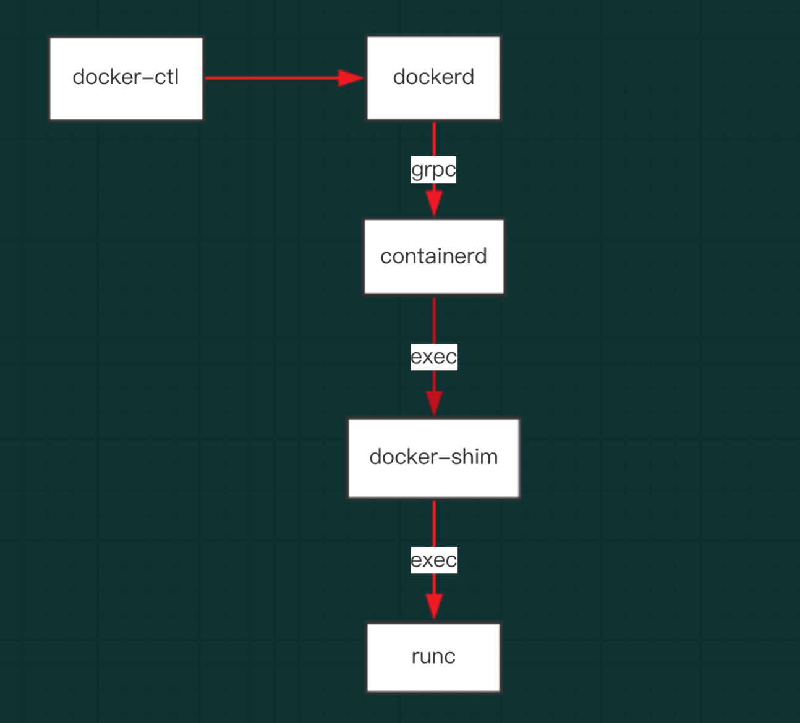

根据前面的文章 容器组件 我们知道组件之间的关系如下，本文通过 docker update 命令来追寻各组件之间的调用关系。
 图，docker 组件之间的调用关系
比如新增一个自定义的属性 cacheProperty，并且支持该属性的 update。
docker update --cacheProperty test abebf7571666
docker
client
在调用上面的 docker update 命令时首先调用的是 docker client，会进入到如下的流程。
// cli/command/container/update.go
func runUpdate(dockerCli *command.DockerCli, opts *updateOptions) error {
resources := containertypes.Resources{
...
CPURealtimePeriod: opts.cpuRealtimePeriod,
CacheProperty: opts.cacheProperty,
}
updateConfig := containertypes.UpdateConfig{
Resources: resources,
RestartPolicy: restartPolicy,
}
for _, container := range opts.containers {
r, err := dockerCli.Client().ContainerUpdate(ctx, container, updateConfig)
......
}
}
// client/container_update.go
func (cli *Client) ContainerUpdate(ctx context.Context, containerID string, updateConfig container.UpdateConfig) (container.ContainerUpdateOKBody, error) {
serverResp, err := cli.post(ctx, "/containers/"+containerID+"/update", nil, updateConfig, nil)
}
上面的流程组装了一个 /containers/"+containerID+"/update 的API 请求。
func (cli *Client) post(ctx context.Context, path string, query url.Values, obj interface{}, headers map[string][]string) (serverResponse, error) {
body, headers, err := encodeBody(obj, headers)
if err != nil {
return serverResponse{}, err
}
return cli.sendRequest(ctx, "POST", path, query, body, headers)
}
func (cli *Client) doRequest(ctx context.Context, req *http.Request) (serverResponse, error) {
serverResp := serverResponse{statusCode: -1}
resp, err := ctxhttp.Do(ctx, cli.client, req)
...
}
server
//api/server/router/container/container.go
func (r *containerRouter) initRoutes() {
router.NewPostRoute("/containers/{name:.*}/update", r.postContainerUpdate),
}
// container_routes.go
func (s *containerRouter) postContainerUpdate(ctx context.Context, w http.ResponseWriter, r *http.Request, vars map[string]string) error {
resp, err := s.backend.ContainerUpdate(name, hostConfig)
}
// daemon/update.go
func (daemon *Daemon) ContainerUpdate(name string, hostConfig *container.HostConfig) (container.ContainerUpdateOKBody, error) {
var warnings []string
if err := daemon.update(name, hostConfig); err != nil {
return container.ContainerUpdateOKBody{Warnings: warnings}, err
}
}
func (daemon *Daemon) update(name string, hostConfig *container.HostConfig) error {
// 更新container的配置
if err := container.UpdateContainer(hostConfig); err != nil {
restoreConfig = true
return errCannotUpdate(container.ID, err)
}
// 实时更新continer的状态
if container.IsRunning() && !container.IsRestarting() {
if err := daemon.containerd.UpdateResources(container.ID, toContainerdResources(hostConfig.Resources)); err != nil {
restoreConfig = true
return errCannotUpdate(container.ID, err)
}
}
}
// container/container_unix.go
func (container *Container) UpdateContainer(hostConfig *containertypes.HostConfig) error {
container.Lock()
defer container.Unlock()
// update resources of container
resources := hostConfig.Resources
cResources := &container.HostConfig.Resources
if resources.BlkioWeight != 0 {
cResources.BlkioWeight = resources.BlkioWeight
}
if resources.cacheProperty != "" {
cResources.CacheProperty = resources.CacheProperty
}
}
// libcontainerd/client_linux.go
func (clnt *client) UpdateResources(containerID string, resources Resources) error {
...
_, err = clnt.remote.apiClient.UpdateContainer(context.Background(), &containerd.UpdateContainerRequest{
Id: containerID,
Pid: InitFriendlyName,
Resources: (*containerd.UpdateResource)(&resources),
})
}
通过 RPC 向 containerd 调用 UpdateContainer，proto 定义如下
// containerd/api/grpc/types/api.proto
service API {
...
rpc UpdateContainer(UpdateContainerRequest) returns (UpdateContainerResponse) {}
}
proto 生成的代码如下
// containerd/api/grpc/types/api.pb.go
func (c *aPIClient) UpdateContainer(ctx context.Context, in *UpdateContainerRequest, opts ...grpc.CallOption) (*UpdateContainerResponse, error) {
out := new(UpdateContainerResponse)
err := grpc.Invoke(ctx, "/types.API/UpdateContainer", in, out, c.cc, opts...)
if err != nil {
return nil, err
}
return out, nil
}
// daemon/update_linux.go
func toContainerdResources(resources container.Resources) libcontainerd.Resources {
var r libcontainerd.Resources
...
r.MemoryReservation = uint64(resources.MemoryReservation)
r.KernelMemoryLimit = uint64(resources.KernelMemory)
r.CacheProperty = uint64(resources.CacheProperty)
return r
}
需要在 containerd.UpdateResource 中增加 CacheProperty 字段属性。
// containerd/api/grpc/types/api.pb.go
type UpdateResource struct {
CpuPeriod uint64 `protobuf:"varint,3,opt,name=cpuPeriod" json:"cpuPeriod,omitempty"`
CpuQuota uint64 `protobuf:"varint,4,opt,name=cpuQuota" json:"cpuQuota,omitempty"`
...
CacheProperty uint64 `protobuf:"varint,19,opt,name=..." json:"...,omitempty"`
}
containerd
containerd 作为 gRPC server，接收 dockerd 的请求，具体的流程如下。
// api/grpc/server/server.go
func (s *apiServer) UpdateContainer(ctx context.Context, r *types.UpdateContainerRequest) (*types.UpdateContainerResponse, error) {
e := &supervisor.UpdateTask{}
e.WithContext(ctx)
e.ID = r.Id
e.State = runtime.State(r.Status)
if r.Resources != nil {
rs := r.Resources
e.Resources = &runtime.Resource{}
if rs.CpuShares != 0 {
e.Resources.CPUShares = int64(rs.CpuShares)
}
}
s.sv.SendTask(e)
}
// supervisor/update.go
func (s *Supervisor) updateContainer(t *UpdateTask) error {
i, ok := s.containers[t.ID]
if !ok {
return ErrContainerNotFound
}
container := i.container
if t.State != "" {
switch t.State {
case runtime.Running:
if err := container.Resume(); err != nil {
return err
}
s.notifySubscribers(Event{
ID: t.ID,
Type: StateResume,
Timestamp: time.Now(),
})
case runtime.Paused:
if err := container.Pause(); err != nil {
return err
}
s.notifySubscribers(Event{
ID: t.ID,
Type: StatePause,
Timestamp: time.Now(),
})
default:
return ErrUnknownContainerStatus
}
return nil
}
if t.Resources != nil {
return container.UpdateResources(t.Resources)
}
return nil
}
// runtime/container_linux.go
func (c *container) UpdateResources(r *Resource) error {
sr := ocs.Resources{
Memory: &ocs.Memory{
Limit: u64Ptr(uint64(r.Memory)),
Reservation: u64Ptr(uint64(r.MemoryReservation)),
Swap: u64Ptr(uint64(r.MemorySwap)),
Kernel: u64Ptr(uint64(r.KernelMemory)),
KernelTCP: u64Ptr(uint64(r.KernelTCPMemory)),
},
CPU: &ocs.CPU{
Shares: u64Ptr(uint64(r.CPUShares)),
Quota: u64Ptr(uint64(r.CPUQuota)),
Period: u64Ptr(uint64(r.CPUPeriod)),
Cpus: &r.CpusetCpus,
Mems: &r.CpusetMems,
RealtimePeriod: u64Ptr(uint64(r.CPURealtimePeriod)),
RealtimeRuntime: u64Ptr(uint64(r.CPURealtimeRuntime)),
},
BlockIO: &ocs.BlockIO{
Weight: &r.BlkioWeight,
},
}
srStr := bytes.NewBuffer(nil)
if err := json.NewEncoder(srStr).Encode(&sr); err != nil {
return err
}
args := c.runtimeArgs
args = append(args, "update", "-r", "-", c.id)
cmd := exec.Command(c.runtime, args...)
cmd.Stdin = srStr
b, err := cmd.CombinedOutput()
if err != nil {
return fmt.Errorf(string(b))
}
return nil
}
通过 exec 调用 runc 的命令行。
runc
// update.go
var updateCommand = cli.Command{
Name: "update",
Usage: "update container resource constraints",
ArgsUsage: `<container-id>`,
Action: func(context *cli.Context) error {
container, err := getContainer(context)
if err != nil {
return err
}
r := specs.Resources{
Memory: &specs.Memory{
Limit: u64Ptr(0),
Reservation: u64Ptr(0),
Swap: u64Ptr(0),
Kernel: u64Ptr(0),
KernelTCP: u64Ptr(0),
},
}
}
}
config.Cgroups.Resources.BlkioWeight = *r.BlockIO.Weight
config.Cgroups.Resources.CpuPeriod = int64(*r.CPU.Period)
}
自此 runc 接收到配置的更新并做相应的处理。后续的流程就不分析了。